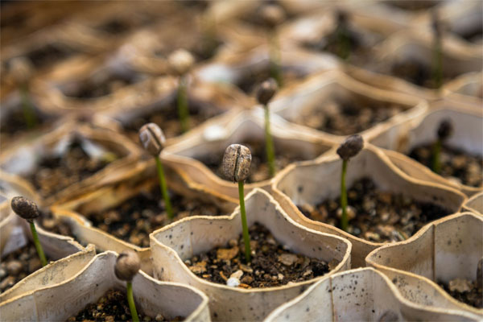
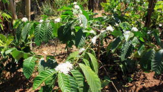
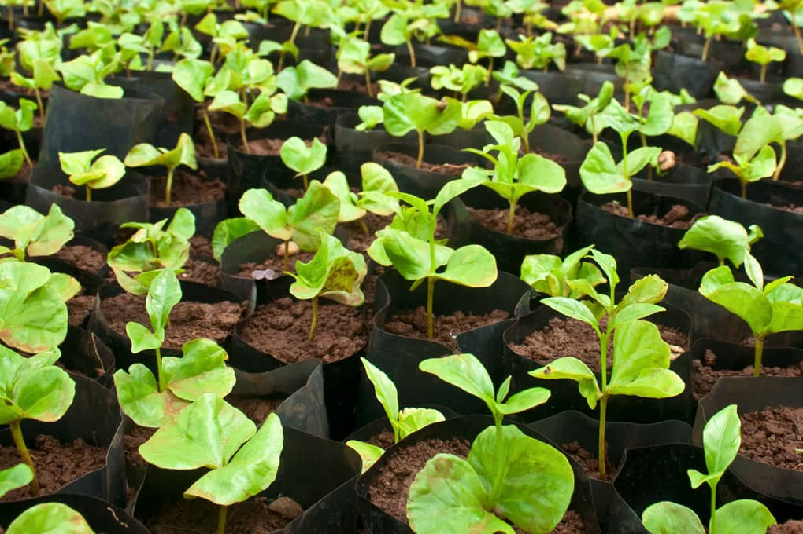
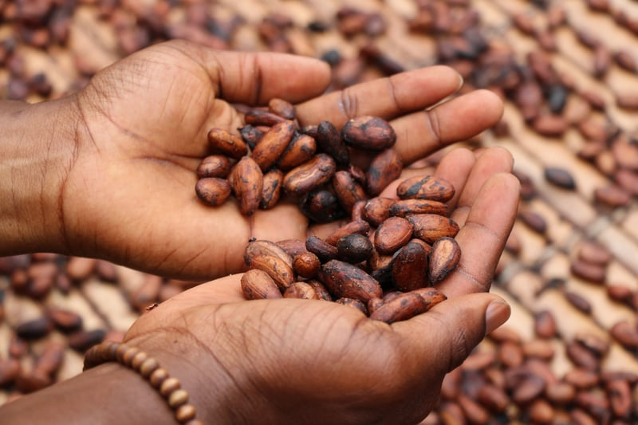

Le café, boisson incontournable dans le monde entier, provient des graines du caféier. Sa culture suit plusieurs étapes essentielles, de la plantation à la récolte.
|  | 1. La plantationLes caféiers sont cultivés à partir de graines, généralement en pépinière. Après 6 à 12 mois, les jeunes plants sont transférés dans les plantations. Ils nécessitent un climat tropical, avec des températures entre 18 et 25°C et une altitude adaptée (600 à 2000 m). |
2. La croissance du caféierLe caféier met 3 à 4 ans avant de produire ses premières fleurs blanches parfumées, qui donneront les cerises de café. Il peut vivre plusieurs décennies, mais sa production optimale dure environ 20 ans. |
 |
|  | 3. La floraison et la formation des cerisesAprès la floraison, les fleurs tombent et laissent place aux fruits (cerises de café). Leur maturation dure entre 6 et 9 mois pour l’Arabica et jusqu’à 11 mois pour le Robusta. La couleur des cerises passe du vert au rouge vif ou jaune selon la variété. |
4. La récolteUne fois mûres, les cerises sont récoltées soit à la main (cueillette sélective pour une meilleure qualité) soit mécaniquement. Une récolte bien effectuée garantit un café de qualité. Après la récolte, les grains subissent plusieurs traitements (séchage, fermentation, torréfaction) avant d’être consommés sous forme de café. |
 |